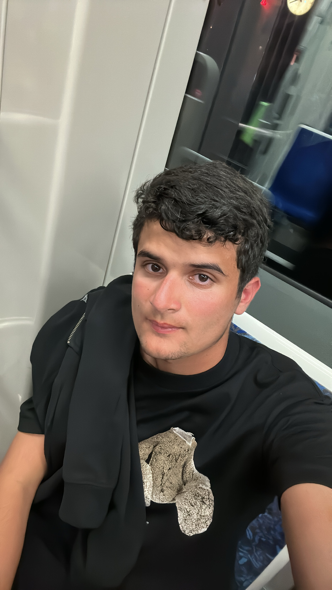

Sobre Mim
Me chamo Marcos, tenho 18 anos e faço Ciência da Computação na UFPE.
Curiosidades
- Quando eu era mais novo cheguei a 7º do Brasil em uma competição de natação
- Tenho uma loja de roupa desde os meus 14 anos
Hobbies
- Sair com os amigos
- Jogar tênis
- Viajar